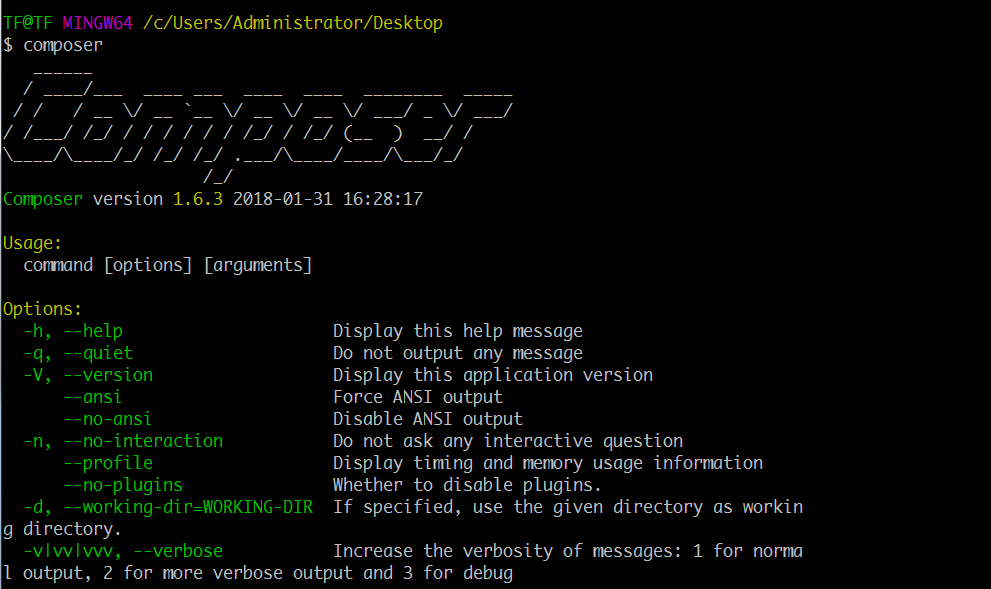
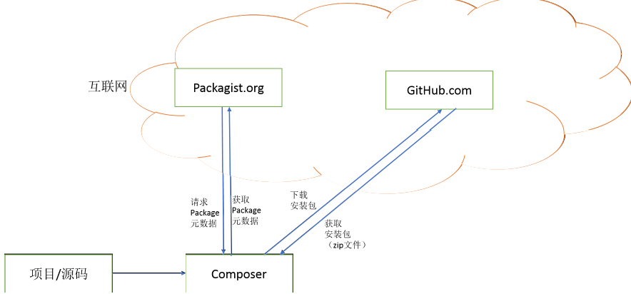
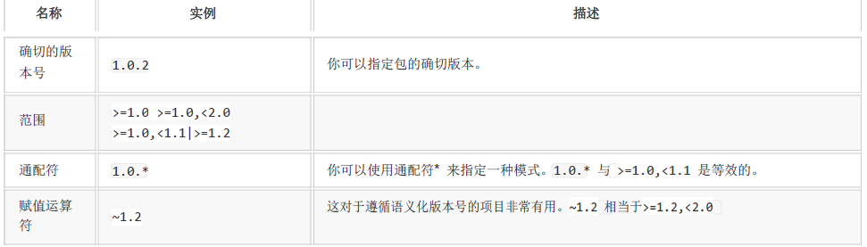

Composer是什么
Composer是 PHP 用来管理依赖（dependency）关系的工具。你可以在自己的项目中声明所依赖的外部工具库（libraries），Composer 会帮你安装这些依赖的库文件。
Composer解决了什么?
- 统一的资源仓库,不用到处乱找库文件代码
- 统一的安装方式
- 解决库之间的依赖关系
windows安装 Composer
下载并且运行 Composer-Setup.exe，它将安装最新版本的 Composer ，并设置好系统的环境变量，因此你可以在任何目录下直接使用 composer 命令。
安装依赖
- PHP > 5.3
- 打开OpenSSL扩展
- 下载CA证书, 修改php.ini
openssl.cafile="D:/cafile/cacert2018-03-07.pem"
命令行输入Composer

切换到国内镜像源
composer config -g repositories.packagist composer https://packagist.phpcomposer.com
Composer架构思路

composer.json
新建一个目录并且新建文件命名为composer.json
格式
{
"require":{
"github用户名/仓库名称":"类库版本"
}
}
使用命令安装配置文件所指定的库
composer install
安装完成后生成了composer.lock文件和vendor目录
composer.lock
在composer install后，在项目文件夹下还生成了一个composer.lock文件，在安装包的时候，composer会先检查是否存在composer.lock文件,如果不存在，则会创建一个，然后将安装的包的确切的版本号写入到composer.lock中
引入自动加载文件
index.php
<?php
require "vendor/autoload.php"
?>
自动加载遵循,psr4规范, 通过命名空间来require文件
追加新库
composer require github用户名/仓库名称=版本号
自动会加入composer.json

更新
全部更新
composer update
composer update(会更新所有的非指定固定版本类库, 谨慎操作)
单个更新
composer update github用户名/仓库名称
假如我们更新和require不指定版本, 会下载会受到PHP版本的约束的最新版本
删除类库
composer remove github用户名/仓库名称
删除操作会移除指定的类库和类库的依赖. 但是不会删除其他类库所依赖的文件, 也就是说A库和B库依赖C库, 移除A库但不会移除C库, 因为B库也依赖C库, 如果B库不依赖C库, 那么C库将会被删除
创建项目, 以ThinkPHP 为例
上面讲的都是类库, 现在是项目的操作, 类库下载安装后是放入 vendor目录下, 但是框架不一样, 框架是一个单独成立的, 他不需要当成类库使用, 框架是载体, 类库是载体的物品
composer create-project topthink/think=5.1.* "项目路径"
如果之前已经安装过, 那么切换到你的应用根目录进行更新
composer update topthink/framework
更多
关于composer.json的写法请参考 http://docs.phpcomposer.com/01-basic-usage.html
官方网站
英文 https://packagist.org 中文 http://www.phpcomposer.com
自动加载
除了库的下载，Composer 还准备了一个自动加载文件，它可以加载 Composer 下载的库中所有的类文件。使用它，你只需要将下面这行代码添加到你项目的引导文件中
require 'vendor/autoload.php';